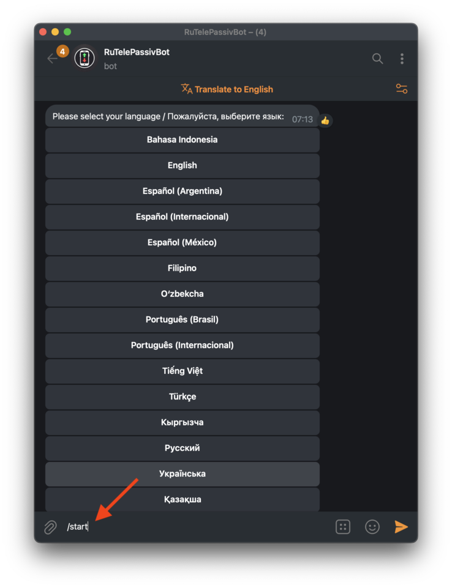
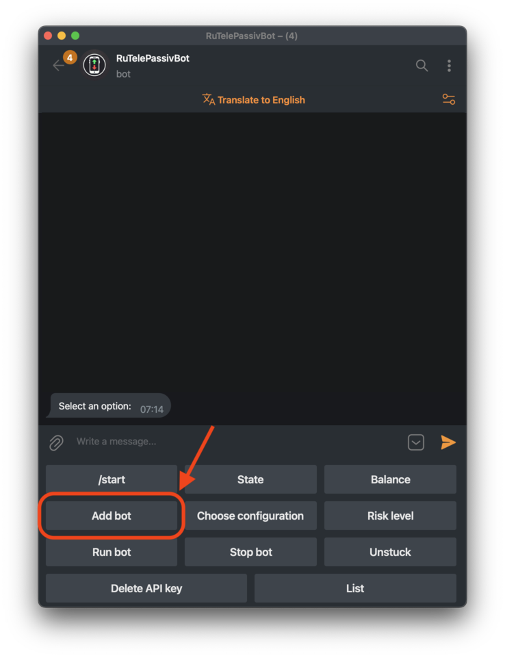
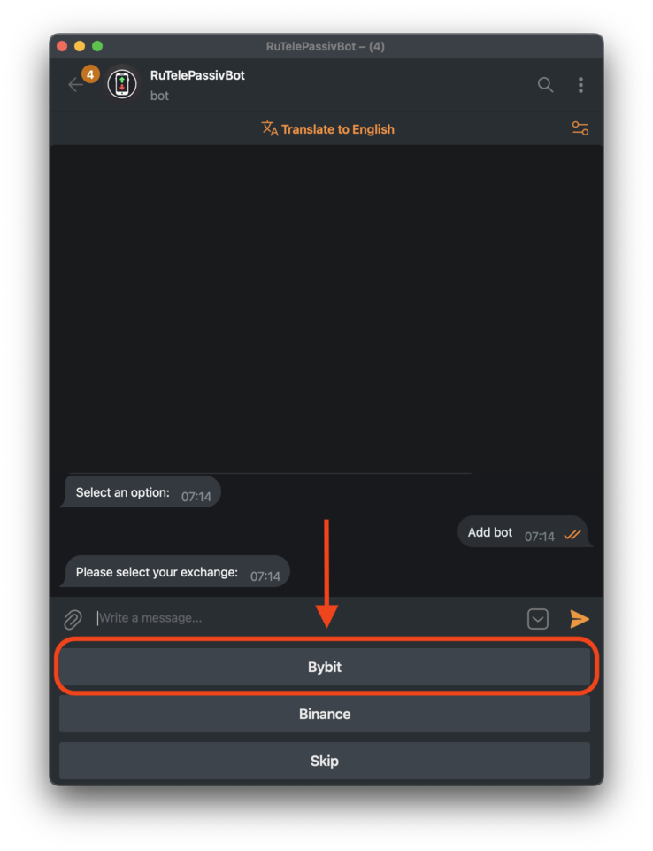
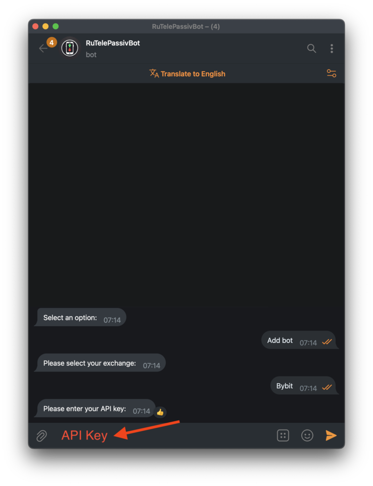
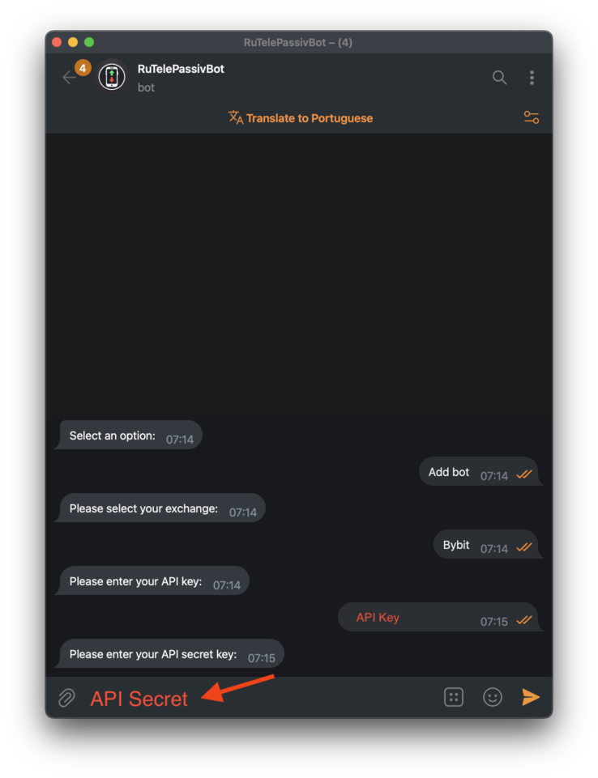
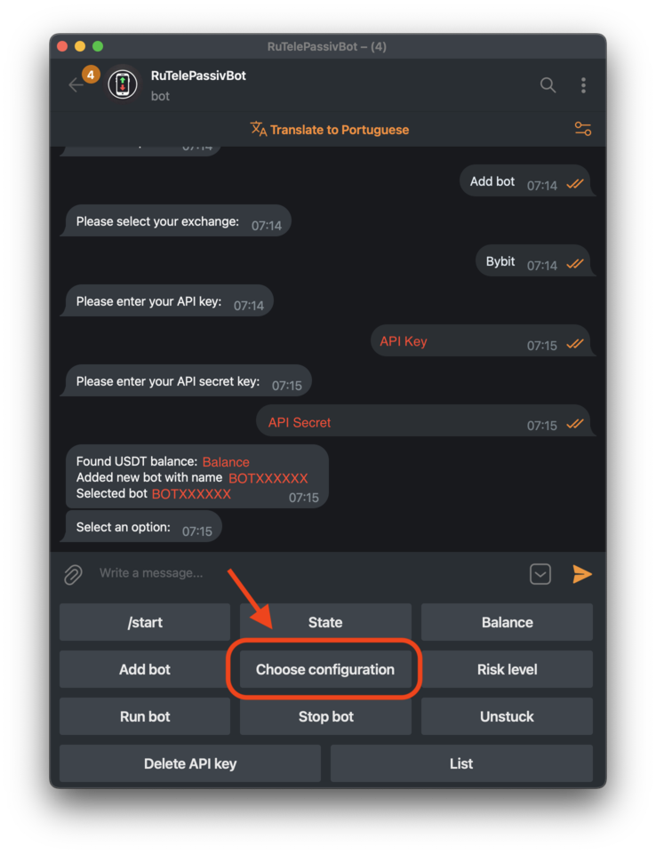
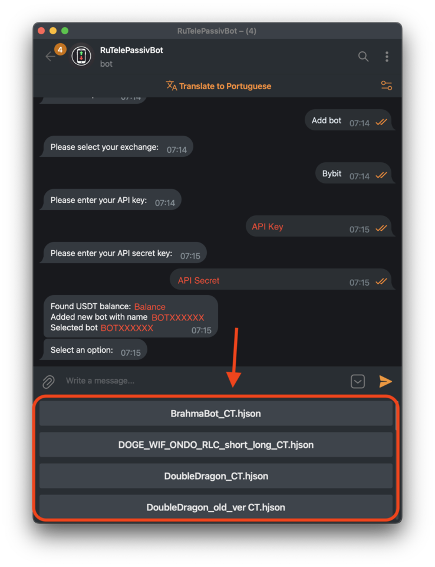
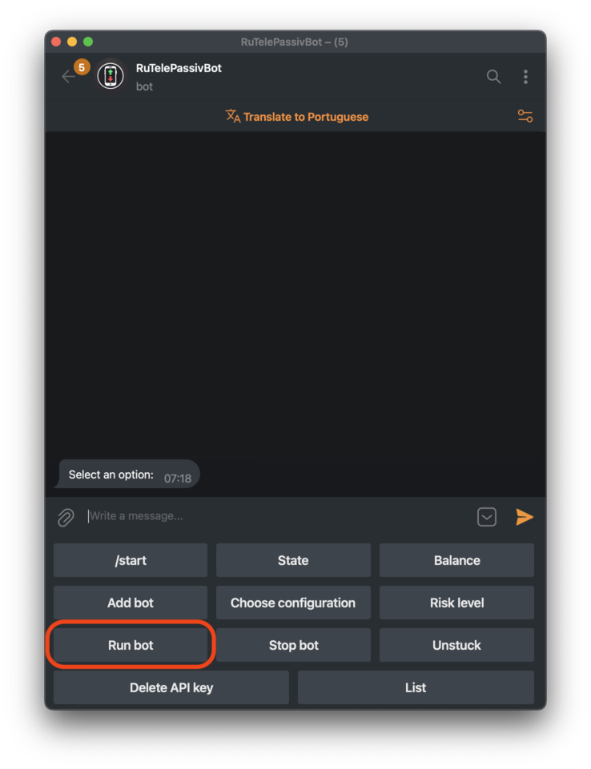

Configuring TelePassivBot in Telegram
Step 1
Type "/start" to start the bot and choose a language.
Step 2
Click on "Add Bot" to create a new bot instance.
Step 3
Select your exchange. This guide uses Bybit as an example.
Step 4
Enter the API key generated in the previous section.
Step 5
Enter the API Secret Key generated in the previous section.
If successful, after a few seconds you should see your account balance and the new bot's name.
Step 6
Now it's time to choose a bot configuration.
Step 7
Choose whatever configuration you prefer, such as BrahmaBot or DoubleDragon.
Step 8
A brief description will appear, if you agree, type "yes" to accept.

Step 9
Click "Run bot" and you are good to go!
